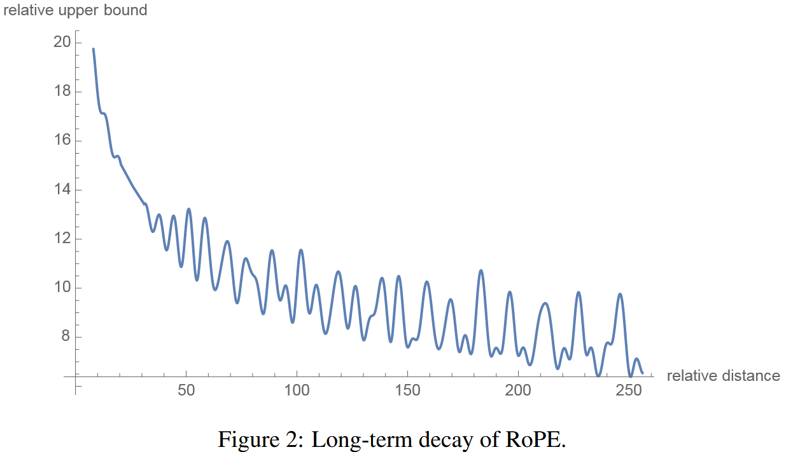
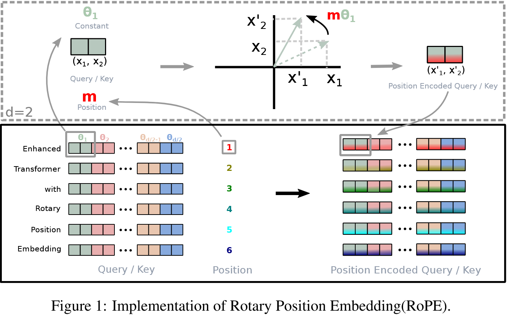

import torch
import torch.nn as nn
from typing import Optional, TupleRoPE
RoPE
In order to let large language models (LLMs) know the order of the tokens, we use positional embeddings. There are absolute positional embedding and relative positional embeding. Today, we will talk about relative positional embedding with Rotary Position Embedding (RoPE) from RoFormer: Enhanced Transformer with Rotary Position Embedding by Su et al.
Implementation
There are two ways to implement RoPE. One from Llama and another from Hugging Face.
batch_size = 2
context_len = 3
num_heads = 4
head_dim = 16torch.manual_seed(123)
queries = torch.randn(batch_size, context_len, num_heads, head_dim)
keys = torch.randn(batch_size, context_len, num_heads, head_dim)
queries.shape, keys.shape(torch.Size([2, 3, 4, 16]), torch.Size([2, 3, 4, 16]))Llama
Below is the code from Llama 2 implementation. Let’s try to understand it.
def precompute_freqs_cis(dim: int, end: int, theta: float = 10000.0):
"""
Precompute the frequency tensor for complex exponentials (cis) with given dimensions.
This function calculates a frequency tensor with complex exponentials using the given dimension 'dim'
and the end index 'end'. The 'theta' parameter scales the frequencies.
The returned tensor contains complex values in complex64 data type.
Args:
dim (int): Dimension of the frequency tensor.
end (int): End index for precomputing frequencies.
theta (float, optional): Scaling factor for frequency computation. Defaults to 10000.0.
Returns:
torch.Tensor: Precomputed frequency tensor with complex exponentials.
"""
freqs = 1.0 / (theta ** (torch.arange(0, dim, 2)[: (dim // 2)].float() / dim))
t = torch.arange(end, device=freqs.device) # type: ignore
freqs = torch.outer(t, freqs).float() # type: ignore
freqs_cis = torch.polar(torch.ones_like(freqs), freqs) # complex64
return freqs_cisLet’s go through code step by step. First, we need the arguments to pass.
dim = head_dim
end = context_len
theta = 10_000We want to create a frequency tensor. We are creating a dim // 2 tensor because we get cos and sin from each frequency. And these are applied to each column as we will see.
torch.arange(0, dim, 2)[: (dim // 2)].float()tensor([ 0., 2., 4., 6., 8., 10., 12., 14.])Then we normalize by dim.
(torch.arange(0, dim, 2)[: (dim // 2)].float() / dim)tensor([0.0000, 0.1250, 0.2500, 0.3750, 0.5000, 0.6250, 0.7500, 0.8750])theta ** (torch.arange(0, dim, 2)[: (dim // 2)].float() / dim)tensor([1.0000e+00, 3.1623e+00, 1.0000e+01, 3.1623e+01, 1.0000e+02, 3.1623e+02,
1.0000e+03, 3.1623e+03])1.0 / (theta ** (torch.arange(0, dim, 2)[: (dim // 2)].float() / dim))tensor([1.0000e+00, 3.1623e-01, 1.0000e-01, 3.1623e-02, 1.0000e-02, 3.1623e-03,
1.0000e-03, 3.1623e-04])freqs = 1.0 / (theta ** (torch.arange(0, dim, 2)[: (dim // 2)].float() / dim))
freqstensor([1.0000e+00, 3.1623e-01, 1.0000e-01, 3.1623e-02, 1.0000e-02, 3.1623e-03,
1.0000e-03, 3.1623e-04])- High frequencies (like 1.0) rotate quickly → capture short-range positional relationships
- Low frequencies (like 3.1623e-04 = 0.00031623) rotate slowly → capture long-range positional relationships
Think of it like a clock: - A second hand (high frequency) completes many rotations quickly - good for distinguishing nearby moments - An hour hand (low frequency) rotates slowly - good for distinguishing longer time periods
In RoPE, the high frequency dimensions help the model distinguish between adjacent tokens, while the low frequency dimensions help distinguish between tokens that are far apart in the sequence.
t = torch.arange(end, device=freqs.device)
ttensor([0, 1, 2])freqs = torch.outer(t, freqs).float()
freqs.shape, freqs(torch.Size([3, 8]),
tensor([[0.0000e+00, 0.0000e+00, 0.0000e+00, 0.0000e+00, 0.0000e+00, 0.0000e+00,
0.0000e+00, 0.0000e+00],
[1.0000e+00, 3.1623e-01, 1.0000e-01, 3.1623e-02, 1.0000e-02, 3.1623e-03,
1.0000e-03, 3.1623e-04],
[2.0000e+00, 6.3246e-01, 2.0000e-01, 6.3246e-02, 2.0000e-02, 6.3246e-03,
2.0000e-03, 6.3246e-04]]))- Lower dimension indices → higher frequencies → faster rotation
- Higher dimension indices → lower frequencies → slower rotation
freqs_cis = torch.polar(torch.ones_like(freqs), freqs)
freqs_cis.shape, freqs_cis(torch.Size([3, 8]),
tensor([[ 1.0000+0.0000e+00j, 1.0000+0.0000e+00j, 1.0000+0.0000e+00j,
1.0000+0.0000e+00j, 1.0000+0.0000e+00j, 1.0000+0.0000e+00j,
1.0000+0.0000e+00j, 1.0000+0.0000e+00j],
[ 0.5403+8.4147e-01j, 0.9504+3.1098e-01j, 0.9950+9.9833e-02j,
0.9995+3.1618e-02j, 0.9999+9.9998e-03j, 1.0000+3.1623e-03j,
1.0000+1.0000e-03j, 1.0000+3.1623e-04j],
[-0.4161+9.0930e-01j, 0.8066+5.9113e-01j, 0.9801+1.9867e-01j,
0.9980+6.3203e-02j, 0.9998+1.9999e-02j, 1.0000+6.3245e-03j,
1.0000+2.0000e-03j, 1.0000+6.3246e-04j]]))
Image from the RoPE paper.
def apply_rotary_emb(
xq: torch.Tensor,
xk: torch.Tensor,
freqs_cis: torch.Tensor,
) -> Tuple[torch.Tensor, torch.Tensor]:
"""
Apply rotary embeddings to input tensors using the given frequency tensor.
This function applies rotary embeddings to the given query 'xq' and key 'xk' tensors using the provided
frequency tensor 'freqs_cis'. The input tensors are reshaped as complex numbers, and the frequency tensor
is reshaped for broadcasting compatibility. The resulting tensors contain rotary embeddings and are
returned as real tensors.
Args:
xq (torch.Tensor): Query tensor to apply rotary embeddings.
xk (torch.Tensor): Key tensor to apply rotary embeddings.
freqs_cis (torch.Tensor): Precomputed frequency tensor for complex exponentials.
Returns:
Tuple[torch.Tensor, torch.Tensor]: Tuple of modified query tensor and key tensor with rotary embeddings.
"""
xq_ = torch.view_as_complex(xq.float().reshape(*xq.shape[:-1], -1, 2))
xk_ = torch.view_as_complex(xk.float().reshape(*xk.shape[:-1], -1, 2))
freqs_cis = reshape_for_broadcast(freqs_cis, xq_)
xq_out = torch.view_as_real(xq_ * freqs_cis).flatten(3)
xk_out = torch.view_as_real(xk_ * freqs_cis).flatten(3)
return xq_out.type_as(xq), xk_out.type_as(xk)queries and keys have shape (batch_size, context_len, num_heads, head_dim).
xq = queries
xk = keys
xq.shape, xk.shape, freqs_cis.shape(torch.Size([2, 3, 4, 16]), torch.Size([2, 3, 4, 16]), torch.Size([3, 8]))xq.shape[:-1]torch.Size([2, 3, 4])Expand last dimension of query (head_dim), 16, into 2. One for cos, the other for sin.
xq.float().reshape(*xq.shape[:-1], -1, 2).shapetorch.Size([2, 3, 4, 8, 2])xq[0,0,0]tensor([ 0.3374, -0.1778, -0.3035, -0.5880, 0.3486, 0.6603, -0.2196, -0.3792,
0.7671, -1.1925, 0.6984, -1.4097, 0.1794, 1.8951, 0.4954, 0.2692])xq_ = torch.view_as_complex(xq.float().reshape(*xq.shape[:-1], -1, 2))
xq_.shapetorch.Size([2, 3, 4, 8])xq_[0,0,0]tensor([ 0.3374-0.1778j, -0.3035-0.5880j, 0.3486+0.6603j, -0.2196-0.3792j,
0.7671-1.1925j, 0.6984-1.4097j, 0.1794+1.8951j, 0.4954+0.2692j])Then, reshape_for_broadcast happens.
def reshape_for_broadcast(freqs_cis: torch.Tensor, x: torch.Tensor):
"""
Reshape frequency tensor for broadcasting it with another tensor.
This function reshapes the frequency tensor to have the same shape as the target tensor 'x'
for the purpose of broadcasting the frequency tensor during element-wise operations.
Args:
freqs_cis (torch.Tensor): Frequency tensor to be reshaped.
x (torch.Tensor): Target tensor for broadcasting compatibility.
Returns:
torch.Tensor: Reshaped frequency tensor.
Raises:
AssertionError: If the frequency tensor doesn't match the expected shape.
AssertionError: If the target tensor 'x' doesn't have the expected number of dimensions.
"""
ndim = x.ndim
assert 0 <= 1 < ndim
assert freqs_cis.shape == (x.shape[1], x.shape[-1])
shape = [d if i == 1 or i == ndim - 1 else 1 for i, d in enumerate(x.shape)]
return freqs_cis.view(*shape)Let’s remind ourselves of the shapes.
freqs_cis.shape, queries.shape(torch.Size([3, 8]), torch.Size([2, 3, 4, 16]))Rembmer queries and keys have shape: (batch_size, context_len, num_heads, head_dim). reshape_for_broadcast is used after queries and keys are transformed into complex space according to apply_rotary_emb. We want freqs_cis to be (1, context_len, 1, head_dim). Let’s use queries as x.
x = xq_
x.shapetorch.Size([2, 3, 4, 8])ndim = x.ndim
ndim4assert 0 <= 1 < ndim
assert freqs_cis.shape == (x.shape[1], x.shape[-1])shape = [d if i == 1 or i == ndim - 1 else 1 for i, d in enumerate(x.shape)]
shape[1, 3, 1, 8]Going back to apply_rotary_emb.
freqs_cis = reshape_for_broadcast(freqs_cis, xq_)
freqs_cis.shapetorch.Size([1, 3, 1, 8])(xq_ * freqs_cis).shapetorch.Size([2, 3, 4, 8])xq_[0,1,0]tensor([ 0.5146+0.9938j, -0.2587-1.0826j, -0.0444+1.6236j, -2.3229+1.0878j,
0.6716+0.6933j, -0.9487-0.0765j, -0.1526+0.1167j, 0.4403-1.4465j])freqs_cis[0,1,0]tensor([0.5403+8.4147e-01j, 0.9504+3.1098e-01j, 0.9950+9.9833e-02j,
0.9995+3.1618e-02j, 0.9999+9.9998e-03j, 1.0000+3.1623e-03j,
1.0000+1.0000e-03j, 1.0000+3.1623e-04j])(xq_ * freqs_cis)[0,1,0]tensor([-0.5582+0.9700j, 0.0908-1.1093j, -0.2062+1.6110j, -2.3561+1.0138j,
0.6646+0.7000j, -0.9485-0.0795j, -0.1528+0.1166j, 0.4407-1.4464j])# Under the hood
0.5146*0.5403-0.9938*8.4147e-01, 0.5146*8.4147e-01+0.9938*0.5403(-0.5582145060000001, 0.969970602)The multiplication xq_ * freqs_cis is complex number multiplication, which performs the rotation.
When you multiply two complex numbers:
(a + bi) * (cos(θ) + i*sin(θ)) = (a*cos(θ) - b*sin(θ)) + i*(a*sin(θ) + b*cos(θ))This is exactly the 2D rotation formula! So each complex number in xq_ gets rotated by the corresponding angle in freqs_cis.
Each position gets its own rotation angles, and each dimension pair gets its own frequency, but all heads share the same positional encoding.
This is what the transformation looks like.
(xq_ * freqs_cis)[0,0]tensor([[ 0.3374-0.1778j, -0.3035-0.5880j, 0.3486+0.6603j, -0.2196-0.3792j,
0.7671-1.1925j, 0.6984-1.4097j, 0.1794+1.8951j, 0.4954+0.2692j],
[-0.0770-1.0205j, -0.1690+0.9178j, 1.5810+1.3010j, 1.2753-0.2010j,
0.4965-1.5723j, 0.9666-1.1481j, -1.1589+0.3255j, -0.6315-2.8400j],
[-1.3250+0.1784j, -2.1338+1.0524j, -0.3885-0.9343j, -0.4991-1.0867j,
0.8805+1.5542j, 0.6266-0.1755j, 0.0983-0.0935j, 0.2662-0.5850j],
[ 0.8768+1.6221j, -1.4779+1.1331j, -1.2203+1.3139j, 1.0533+0.1388j,
2.2473-0.8036j, -0.2808+0.7697j, -0.6596-0.7979j, 0.1838+0.2293j]])
Image from the RoPE paper.
When we use torch.view_as_real,
torch.view_as_real(xq_ * freqs_cis)[0,0]tensor([[[ 0.3374, -0.1778],
[-0.3035, -0.5880],
[ 0.3486, 0.6603],
[-0.2196, -0.3792],
[ 0.7671, -1.1925],
[ 0.6984, -1.4097],
[ 0.1794, 1.8951],
[ 0.4954, 0.2692]],
[[-0.0770, -1.0205],
[-0.1690, 0.9178],
[ 1.5810, 1.3010],
[ 1.2753, -0.2010],
[ 0.4965, -1.5723],
[ 0.9666, -1.1481],
[-1.1589, 0.3255],
[-0.6315, -2.8400]],
[[-1.3250, 0.1784],
[-2.1338, 1.0524],
[-0.3885, -0.9343],
[-0.4991, -1.0867],
[ 0.8805, 1.5542],
[ 0.6266, -0.1755],
[ 0.0983, -0.0935],
[ 0.2662, -0.5850]],
[[ 0.8768, 1.6221],
[-1.4779, 1.1331],
[-1.2203, 1.3139],
[ 1.0533, 0.1388],
[ 2.2473, -0.8036],
[-0.2808, 0.7697],
[-0.6596, -0.7979],
[ 0.1838, 0.2293]]])xq_out[0,0]tensor([[ 0.3374, -0.1778, -0.3035, -0.5880, 0.3486, 0.6603, -0.2196, -0.3792,
0.7671, -1.1925, 0.6984, -1.4097, 0.1794, 1.8951, 0.4954, 0.2692],
[-0.0770, -1.0205, -0.1690, 0.9178, 1.5810, 1.3010, 1.2753, -0.2010,
0.4965, -1.5723, 0.9666, -1.1481, -1.1589, 0.3255, -0.6315, -2.8400],
[-1.3250, 0.1784, -2.1338, 1.0524, -0.3885, -0.9343, -0.4991, -1.0867,
0.8805, 1.5542, 0.6266, -0.1755, 0.0983, -0.0935, 0.2662, -0.5850],
[ 0.8768, 1.6221, -1.4779, 1.1331, -1.2203, 1.3139, 1.0533, 0.1388,
2.2473, -0.8036, -0.2808, 0.7697, -0.6596, -0.7979, 0.1838, 0.2293]])xq_out = torch.view_as_real(xq_ * freqs_cis).flatten(3)
xq_out.shapetorch.Size([2, 3, 4, 16])torchtune implementation
torchtune’s RotaryPositionalEmbeddings follows llama’s implementation.
from torchtune.modules import RotaryPositionalEmbeddingsWARNING:torchao.kernel.intmm:Warning: Detected no triton, on systems without Triton certain kernels will not worktt_rope_emb = RotaryPositionalEmbeddings(dim=head_dim, max_seq_len=context_len, base=theta)
tt_rope_embRotaryPositionalEmbeddings()tt_queries_rot = tt_rope_emb(queries)
tt_queries_rot.shapetorch.Size([2, 3, 4, 16])This gives us the same result as llama implementation.
assert torch.allclose(tt_queries_rot, xq_out)LitGPT implementation
# LitGPT code function `litgpt_build_rope_cache` from https://github.com/Lightning-AI/litgpt/blob/main/litgpt/model.py
# LitGPT is licensed under Apache v2: https://github.com/Lightning-AI/litgpt/blob/main/LICENSE
def litgpt_build_rope_cache(
seq_len: int,
n_elem: int,
device: Optional[torch.device] = None,
base: int = 10000,
condense_ratio: int = 1,
extra_config: Optional[dict] = None,
) -> Tuple[torch.Tensor, torch.Tensor]:
"""
Enhanced Transformer with Rotary Position Embedding.
Args:
seq_len (int): Sequence length.
n_elem (int): Number of elements (head dimension).
device (torch.device, optional): Device for tensor allocations.
base (int, optional): Base for computing inverse frequencies.
condense_ratio (int, optional): Ratio to condense the position indices.
extra_config (dict, optional): Configuration parameters for frequency adjustments (used by Llama 3.1 and 3.2)
Returns:
Tuple[torch.Tensor, torch.Tensor]: Cosine and sine caches for RoPE.
"""
# Compute the inverse frequencies theta
theta = 1.0 / (base ** (torch.arange(0, n_elem, 2, device=device).float() / n_elem))
if extra_config is not None:
orig_context_len = extra_config["original_max_seq_len"]
factor = extra_config["factor"]
low_freq_factor = extra_config["low_freq_factor"]
high_freq_factor = extra_config["high_freq_factor"]
wavelen = 2 * torch.pi / theta
ratio = orig_context_len / wavelen
smooth_factor = (ratio - low_freq_factor) / (high_freq_factor - low_freq_factor)
smooth_factor = torch.clamp(smooth_factor, min=0.0, max=1.0)
# Compute adjusted_theta without masked indexing
adjusted_theta = (1 - smooth_factor) * (theta / factor) + smooth_factor * theta
theta = adjusted_theta
# Create position indices `[0, 1, ..., seq_len - 1]`
seq_idx = torch.arange(seq_len, device=device) / condense_ratio
# Calculate the product of position index and $\theta_i$
idx_theta = torch.outer(seq_idx, theta).repeat(1, 2)
return torch.cos(idx_theta), torch.sin(idx_theta)litgpt_cos, litgpt_sin = litgpt_build_rope_cache(context_len, n_elem=head_dim, base=theta)
litgpt_cos.shape, litgpt_sin.shape(torch.Size([3, 16]), torch.Size([3, 16]))freqs_cis = precompute_freqs_cis(dim=head_dim, end=context_len, theta=theta)
freqs_cis.shapetorch.Size([3, 8])litgpt_cos[1], litgpt_sin[1](tensor([0.5403, 0.9504, 0.9950, 0.9995, 0.9999, 1.0000, 1.0000, 1.0000, 0.5403,
0.9504, 0.9950, 0.9995, 0.9999, 1.0000, 1.0000, 1.0000]),
tensor([8.4147e-01, 3.1098e-01, 9.9833e-02, 3.1618e-02, 9.9998e-03, 3.1623e-03,
1.0000e-03, 3.1623e-04, 8.4147e-01, 3.1098e-01, 9.9833e-02, 3.1618e-02,
9.9998e-03, 3.1623e-03, 1.0000e-03, 3.1623e-04]))freqs_cis[1]tensor([0.5403+8.4147e-01j, 0.9504+3.1098e-01j, 0.9950+9.9833e-02j,
0.9995+3.1618e-02j, 0.9999+9.9998e-03j, 1.0000+3.1623e-03j,
1.0000+1.0000e-03j, 1.0000+3.1623e-04j])torch.cos(freqs)[1]tensor([0.5403, 0.9504, 0.9950, 0.9995, 0.9999, 1.0000, 1.0000, 1.0000])torch.cos(freqs_cis)[1]tensor([1.1795-4.8577e-01j, 0.6097-2.5713e-01j, 0.5472-8.3876e-02j,
0.5410-2.6601e-02j, 0.5404-8.4144e-03j, 0.5403-2.6610e-03j,
0.5403-8.4147e-04j, 0.5403-2.6610e-04j])torch.stack([litgpt_cos, litgpt_sin], dim=-1).shapetorch.Size([3, 16, 2])torch.view_as_real(freqs_cis).shape, torch.view_as_real(freqs_cis)[1](torch.Size([3, 8, 2]),
tensor([[5.4030e-01, 8.4147e-01],
[9.5042e-01, 3.1098e-01],
[9.9500e-01, 9.9833e-02],
[9.9950e-01, 3.1618e-02],
[9.9995e-01, 9.9998e-03],
[9.9999e-01, 3.1623e-03],
[1.0000e+00, 1.0000e-03],
[1.0000e+00, 3.1623e-04]]))torch.view_as_real(freqs_cis)[..., 0][1]tensor([0.5403, 0.9504, 0.9950, 0.9995, 0.9999, 1.0000, 1.0000, 1.0000])assert torch.allclose(litgpt_cos, torch.view_as_real(freqs_cis)[..., 0].repeat(1,2))# LitGPT code from https://github.com/Lightning-AI/litgpt/blob/main/litgpt/model.py
# LitGPT is licensed under Apache v2: https://github.com/Lightning-AI/litgpt/blob/main/LICENSE
def litgpt_apply_rope(x: torch.Tensor, cos: torch.Tensor, sin: torch.Tensor) -> torch.Tensor:
head_size = x.size(-1)
a = x[..., : head_size // 2] # (B, nh, T, hs/2)
b = x[..., head_size // 2:] # (B, nh, T, hs/2)
rotated = torch.cat((-b, a), dim=-1) # (B, nh, T, hs)
if cos.dim() > 1:
# batch dimensions must align
# sin/cos are (B, T, hs) so we unsqeeze -3 for nh
# we count from back because all of apply_rope does
cos = cos.unsqueeze(-3)
sin = sin.unsqueeze(-3)
roped = (x * cos) + (rotated * sin)
return roped.to(dtype=x.dtype)(a + bi) * (cos(θ) + i*sin(θ)) = (acos(θ) - bsin(θ)) + i(asin(θ) + bcos(θ))
(acos(θ) - bsin(θ)) + i(asin(θ) + bcos(θ)) = (acos(θ)+ibcos(θ)) + (-bsin(θ)+iasin(θ))
queries.shapetorch.Size([2, 3, 4, 16])assert torch.allclose(tt_queries_rot, freqs_cis)Hugging Face implementation
Hugging Face modeling_llama.
queires_t = queries.transpose(1,2)
keys_t = keys.transpose(1,2)
queires_t.shape, keys_t.shape(torch.Size([2, 4, 3, 16]), torch.Size([2, 4, 3, 16]))queriestensor([[[[ 3.3737e-01, -1.7778e-01, -3.0353e-01, -5.8801e-01, 3.4861e-01,
6.6034e-01, -2.1964e-01, -3.7917e-01, 7.6711e-01, -1.1925e+00,
6.9835e-01, -1.4097e+00, 1.7938e-01, 1.8951e+00, 4.9545e-01,
2.6920e-01],
[-7.7020e-02, -1.0205e+00, -1.6896e-01, 9.1776e-01, 1.5810e+00,
1.3010e+00, 1.2753e+00, -2.0095e-01, 4.9647e-01, -1.5723e+00,
9.6657e-01, -1.1481e+00, -1.1589e+00, 3.2547e-01, -6.3151e-01,
-2.8400e+00],
[-1.3250e+00, 1.7843e-01, -2.1338e+00, 1.0524e+00, -3.8848e-01,
-9.3435e-01, -4.9914e-01, -1.0867e+00, 8.8054e-01, 1.5542e+00,
6.2662e-01, -1.7549e-01, 9.8284e-02, -9.3507e-02, 2.6621e-01,
-5.8504e-01],
[ 8.7684e-01, 1.6221e+00, -1.4779e+00, 1.1331e+00, -1.2203e+00,
1.3139e+00, 1.0533e+00, 1.3881e-01, 2.2473e+00, -8.0364e-01,
-2.8084e-01, 7.6968e-01, -6.5956e-01, -7.9793e-01, 1.8383e-01,
2.2935e-01]],
[[ 5.1463e-01, 9.9376e-01, -2.5873e-01, -1.0826e+00, -4.4382e-02,
1.6236e+00, -2.3229e+00, 1.0878e+00, 6.7155e-01, 6.9330e-01,
-9.4872e-01, -7.6507e-02, -1.5264e-01, 1.1674e-01, 4.4026e-01,
-1.4465e+00],
[ 2.5529e-01, -5.4963e-01, 1.0042e+00, 8.2723e-01, -3.9481e-01,
4.8923e-01, -2.1681e-01, -1.7472e+00, -1.6025e+00, -1.0764e+00,
9.0315e-01, -7.2184e-01, -5.9508e-01, -7.1122e-01, 6.2296e-01,
-1.3729e+00],
[-2.2150e+00, -1.3193e+00, -2.0915e+00, 9.6285e-01, -3.1861e-02,
-4.7896e-01, 7.6681e-01, 2.7468e-02, 1.9929e+00, 1.3708e+00,
-5.0087e-01, -2.7928e-01, -2.0628e+00, 6.3745e-03, -9.8955e-01,
7.0161e-01],
[-9.4053e-01, -4.6806e-01, 1.0322e+00, -2.8300e-01, 4.9275e-01,
-1.4078e-02, -2.7466e-01, -7.6409e-01, 1.3966e+00, -9.9491e-01,
-1.5822e-03, 1.2471e+00, -7.7105e-02, 1.2774e+00, -1.4596e+00,
-2.1595e+00]],
[[-2.5822e-01, -2.0407e+00, -8.0156e-01, -8.1830e-01, -1.1820e+00,
-2.8774e-01, -6.0430e-01, 6.0024e-01, -1.4053e+00, -5.9217e-01,
-2.5479e-01, 1.1517e+00, -1.7858e-02, 4.2640e-01, -7.6574e-01,
-5.4514e-02],
[-1.2743e+00, 4.5128e-01, -2.2801e-01, 9.2238e-01, 2.0561e-01,
-4.9696e-01, 5.8206e-01, 2.0532e-01, -3.0177e-01, -6.7030e-01,
-6.1710e-01, -8.3339e-01, 4.8387e-01, -1.3493e-01, 2.1187e-01,
-8.7140e-01],
[ 6.8508e-01, 2.0024e+00, -5.4688e-01, 1.6014e+00, -2.2577e+00,
-1.8009e+00, 7.0147e-01, 5.7028e-01, -1.1766e+00, -2.0524e+00,
1.1318e-01, 1.4353e+00, 8.8307e-02, -1.2037e+00, 1.0964e+00,
2.4210e+00],
[ 1.5382e-01, -4.4516e-01, 5.5035e-01, 6.5788e-02, 6.8050e-01,
1.2064e+00, 1.6250e+00, 3.4595e-01, 1.3425e-01, 7.6623e-01,
2.2760e+00, -1.3255e+00, -8.9702e-01, 1.1318e-01, 8.3647e-01,
2.8520e-02]]],
[[[-9.7969e-01, -2.1126e+00, -2.7214e-01, -3.5100e-01, 1.1152e+00,
-6.1722e-01, -2.2708e+00, -1.3819e+00, 1.1721e+00, -4.3716e-01,
-4.0527e-01, 7.0864e-01, 9.5331e-01, -1.3035e-02, -1.3009e-01,
-8.7660e-02],
[-6.7349e-02, 2.4674e-01, -9.3917e-01, -1.0448e+00, 1.2783e+00,
4.1903e-01, -5.0727e-01, -6.0623e-01, -1.0532e+00, 1.8386e+00,
-1.0954e-01, -3.3161e-01, 9.0084e-01, 4.8398e-01, -1.3237e+00,
7.8692e-01],
[ 1.3818e+00, -6.9367e-02, -7.6117e-01, 2.4163e-01, -5.8781e-01,
-1.1506e+00, 1.0164e+00, 1.2343e-01, 1.1311e+00, -8.5805e-02,
-5.9727e-02, 3.5527e-01, -1.4355e+00, 7.2748e-02, 1.0528e-01,
-1.0311e+00],
[ 1.3113e+00, -3.5963e-02, 2.1181e-01, -8.6248e-03, 1.8576e+00,
2.1321e+00, -5.0561e-01, -7.9884e-01, -1.0944e+00, -1.0197e+00,
-5.3986e-01, 1.2117e+00, -8.6321e-01, 1.3337e+00, 7.7101e-02,
-5.2181e-02]],
[[ 2.3862e-01, 1.4106e-01, -1.3354e+00, -2.9340e+00, 1.1411e-01,
-1.2072e+00, -3.0083e-01, 1.4274e-01, -1.3027e+00, -4.9187e-01,
-2.1429e+00, 9.4881e-01, -5.6842e-01, -6.4643e-02, 6.6467e-01,
-2.7836e+00],
[ 1.1366e+00, 9.0886e-01, 9.4943e-01, 2.6565e-02, -9.2207e-01,
7.0338e-01, -3.6590e-01, -1.9654e-01, -9.2071e-01, 3.1535e-01,
-2.1734e-02, 3.4414e-01, 2.2710e-01, -4.5969e-01, -6.1831e-01,
2.4612e-01],
[-4.0549e-01, -8.3681e-01, 1.2277e+00, -4.2971e-01, -2.2121e+00,
-3.7802e-01, 9.8382e-01, -1.0895e+00, 2.0171e-01, 2.2145e-02,
-1.7753e+00, -7.4896e-01, 2.7808e-01, -9.6208e-01, -4.2228e-01,
-1.1036e+00],
[ 2.4727e-01, 1.4549e+00, -2.8351e-01, -3.7675e-01, -3.0577e-02,
-8.9448e-02, -1.9652e-01, -9.7133e-01, 9.0046e-01, -2.5233e-01,
1.0669e+00, -2.9846e-01, 8.5576e-01, 1.6098e+00, -1.1893e+00,
1.1677e+00]],
[[ 3.2765e-01, -8.3307e-01, -1.6179e+00, 2.2651e-01, -4.3815e-01,
3.2652e-01, -1.5786e+00, -1.3995e+00, 5.4460e-01, -8.3004e-02,
-1.1753e+00, 1.7825e+00, 1.7524e+00, -2.1347e-01, 4.0949e-01,
4.6454e-02],
[ 6.3669e-01, -1.9433e-01, -8.6139e-01, 5.3384e-01, 9.3758e-01,
-9.2248e-01, 7.0466e-01, -2.7221e-01, 1.4419e-02, -6.4115e-01,
2.3902e+00, -1.4256e+00, -4.6192e-01, -1.5539e+00, -3.3382e-01,
2.4049e-01],
[ 2.1065e+00, 5.5087e-01, -2.9364e-01, -1.8027e+00, -6.9333e-01,
1.7409e+00, 2.6979e-01, 9.5949e-01, -1.0253e+00, -5.5049e-01,
1.0264e+00, -5.6696e-01, -2.6584e-01, -1.1116e+00, -1.3696e+00,
-6.5336e-01],
[-1.6125e+00, -2.2840e-01, 1.8388e+00, -9.4727e-01, 1.4192e-01,
3.6959e-01, -1.7425e-02, -9.5746e-01, -8.1691e-01, -2.8655e-01,
4.3434e-01, -1.3402e-01, -2.1467e+00, -1.7984e+00, -6.8222e-01,
-5.1905e-01]]]])def permute(w, n_heads, dim1=dim, dim2=dim):
return w.view(n_heads, dim1 // n_heads // 2, 2, dim2).transpose(1, 2).reshape(dim1, dim2)queries.shapetorch.Size([2, 3, 4, 16])queries[0,0]tensor([[ 0.3374, -0.1778, -0.3035, -0.5880, 0.3486, 0.6603, -0.2196, -0.3792,
0.7671, -1.1925, 0.6984, -1.4097, 0.1794, 1.8951, 0.4954, 0.2692],
[-0.0770, -1.0205, -0.1690, 0.9178, 1.5810, 1.3010, 1.2753, -0.2010,
0.4965, -1.5723, 0.9666, -1.1481, -1.1589, 0.3255, -0.6315, -2.8400],
[-1.3250, 0.1784, -2.1338, 1.0524, -0.3885, -0.9343, -0.4991, -1.0867,
0.8805, 1.5542, 0.6266, -0.1755, 0.0983, -0.0935, 0.2662, -0.5850],
[ 0.8768, 1.6221, -1.4779, 1.1331, -1.2203, 1.3139, 1.0533, 0.1388,
2.2473, -0.8036, -0.2808, 0.7697, -0.6596, -0.7979, 0.1838, 0.2293]])queries.transpose(2,3).shapetorch.Size([2, 3, 16, 4])queries.transpose(2,3)[0,0]tensor([[ 0.3374, -0.0770, -1.3250, 0.8768],
[-0.1778, -1.0205, 0.1784, 1.6221],
[-0.3035, -0.1690, -2.1338, -1.4779],
[-0.5880, 0.9178, 1.0524, 1.1331],
[ 0.3486, 1.5810, -0.3885, -1.2203],
[ 0.6603, 1.3010, -0.9343, 1.3139],
[-0.2196, 1.2753, -0.4991, 1.0533],
[-0.3792, -0.2010, -1.0867, 0.1388],
[ 0.7671, 0.4965, 0.8805, 2.2473],
[-1.1925, -1.5723, 1.5542, -0.8036],
[ 0.6984, 0.9666, 0.6266, -0.2808],
[-1.4097, -1.1481, -0.1755, 0.7697],
[ 0.1794, -1.1589, 0.0983, -0.6596],
[ 1.8951, 0.3255, -0.0935, -0.7979],
[ 0.4954, -0.6315, 0.2662, 0.1838],
[ 0.2692, -2.8400, -0.5850, 0.2293]])queries.numel()384queries.transpose(2,3).view(batch_size, context_len, num_heads, 16 // num_heads // 2, 2, 4).shapetorch.Size([2, 3, 4, 2, 2, 4])queries.transpose(2,3).view(batch_size, context_len, num_heads, 16 // num_heads // 2, 2, 4).transpose(-2, -3).shapetorch.Size([2, 3, 4, 2, 2, 4])(queries.transpose(2,3)
.view(batch_size, context_len, num_heads, 16 // num_heads // 2, 2, 4)
.transpose(-2, -3)
.reshape(batch_size, context_len,16, 4)).shapetorch.Size([2, 3, 16, 4])(queries.transpose(2,3)
.view(batch_size, context_len, num_heads, 16 // num_heads // 2, 2, 4)
.transpose(-2, -3)
.reshape(batch_size, context_len,16, 4)).transpose(2,3)[0,0]tensor([[ 0.3374, -0.3035, -0.1778, -0.5880, 0.3486, -0.2196, 0.6603, -0.3792,
0.7671, 0.6984, -1.1925, -1.4097, 0.1794, 0.4954, 1.8951, 0.2692],
[-0.0770, -0.1690, -1.0205, 0.9178, 1.5810, 1.2753, 1.3010, -0.2010,
0.4965, 0.9666, -1.5723, -1.1481, -1.1589, -0.6315, 0.3255, -2.8400],
[-1.3250, -2.1338, 0.1784, 1.0524, -0.3885, -0.4991, -0.9343, -1.0867,
0.8805, 0.6266, 1.5542, -0.1755, 0.0983, 0.2662, -0.0935, -0.5850],
[ 0.8768, -1.4779, 1.6221, 1.1331, -1.2203, 1.0533, 1.3139, 0.1388,
2.2473, -0.2808, -0.8036, 0.7697, -0.6596, 0.1838, -0.7979, 0.2293]])permute(queries.transpose(2,3), num_heads, 16, 4).shape--------------------------------------------------------------------------- RuntimeError Traceback (most recent call last) Cell In[90], line 1 ----> 1 permute(queries.transpose(2,3), num_heads, 16, 4).shape Cell In[71], line 2, in permute(w, n_heads, dim1, dim2) 1 def permute(w, n_heads, dim1=dim, dim2=dim): ----> 2 return w.view(n_heads, dim1 // n_heads // 2, 2, dim2).transpose(1, 2).reshape(dim1, dim2) RuntimeError: shape '[4, 2, 2, 4]' is invalid for input of size 384
import transformers
from transformers.models.llama.modeling_llama import LlamaRotaryEmbedding, apply_rotary_pos_embtransformers_version = transformers.__version__
transformers_version'4.50.1'class RoPEConfig:
dim: int = head_dim
rope_theta = theta
max_position_embeddings: int = context_len
hidden_size = head_dim * num_heads
num_attention_heads = num_heads
config = RoPEConfig()
hf_rot_emb = LlamaRotaryEmbedding(config=config)position_ids = torch.arange(context_len, dtype=torch.long).unsqueeze(0)
position_idstensor([[0, 1, 2]])hf_cos, hf_sin = hf_rot_emb(queries, position_ids)
hf_queries_t_rot, hf_keys_t_rot = apply_rotary_pos_emb(queires_t, keys_t, hf_cos, hf_sin)
hf_queries_t_rot.shape, hf_keys_t_rot.shape(torch.Size([2, 4, 3, 16]), torch.Size([2, 4, 3, 16]))hf_queries_rot = hf_queries_t_rot.transpose(1,2)
hf_keys_rot = hf_keys_t_rot.transpose(1,2)
hf_queries_rot.shape, hf_keys_rot.shape(torch.Size([2, 3, 4, 16]), torch.Size([2, 3, 4, 16]))assert torch.allclose(tt_queries_rot, permute(hf_queries_rot, n_heads=num_heads))--------------------------------------------------------------------------- RuntimeError Traceback (most recent call last) Cell In[73], line 1 ----> 1 assert torch.allclose(tt_queries_rot, permute(hf_queries_rot, n_heads=num_heads)) Cell In[71], line 2, in permute(w, n_heads, dim1, dim2) 1 def permute(w, n_heads, dim1=dim, dim2=dim): ----> 2 return w.view(n_heads, dim1 // n_heads // 2, 2, dim2).transpose(1, 2).reshape(dim1, dim2) RuntimeError: shape '[4, 2, 2, 16]' is invalid for input of size 384
torch.testing.assert_close(sin.repeat(1,2), ref_sin.squeeze(0))
torch.testing.assert_close(cos.repeat(1,2), ref_cos.squeeze(0))
torch.testing.assert_close(keys_rot, ref_keys_rot)
torch.testing.assert_close(queries_rot, ref_queries_rot)def permute(w, n_heads, dim1=dim, dim2=dim):
return w.view(n_heads, dim1 // n_heads // 2, 2, dim2).transpose(1, 2).reshape(dim1, dim2)For HF implementation to match with torchtune, we have to permute this.
dim=8
t = torch.arange(8*8).reshape(dim,dim)
ttensor([[ 0, 1, 2, 3, 4, 5, 6, 7],
[ 8, 9, 10, 11, 12, 13, 14, 15],
[16, 17, 18, 19, 20, 21, 22, 23],
[24, 25, 26, 27, 28, 29, 30, 31],
[32, 33, 34, 35, 36, 37, 38, 39],
[40, 41, 42, 43, 44, 45, 46, 47],
[48, 49, 50, 51, 52, 53, 54, 55],
[56, 57, 58, 59, 60, 61, 62, 63]])n_heads=2
t_ = t.view(n_heads, dim//n_heads//2, 2, dim)
t_.shape, t_(torch.Size([2, 2, 2, 8]),
tensor([[[[ 0, 1, 2, 3, 4, 5, 6, 7],
[ 8, 9, 10, 11, 12, 13, 14, 15]],
[[16, 17, 18, 19, 20, 21, 22, 23],
[24, 25, 26, 27, 28, 29, 30, 31]]],
[[[32, 33, 34, 35, 36, 37, 38, 39],
[40, 41, 42, 43, 44, 45, 46, 47]],
[[48, 49, 50, 51, 52, 53, 54, 55],
[56, 57, 58, 59, 60, 61, 62, 63]]]]))t_t = t_.transpose(1,2)
t_t.transpose(1,2).shape, t_t(torch.Size([2, 2, 2, 8]),
tensor([[[[ 0, 1, 2, 3, 4, 5, 6, 7],
[16, 17, 18, 19, 20, 21, 22, 23]],
[[ 8, 9, 10, 11, 12, 13, 14, 15],
[24, 25, 26, 27, 28, 29, 30, 31]]],
[[[32, 33, 34, 35, 36, 37, 38, 39],
[48, 49, 50, 51, 52, 53, 54, 55]],
[[40, 41, 42, 43, 44, 45, 46, 47],
[56, 57, 58, 59, 60, 61, 62, 63]]]]))t_t.reshape(dim,dim)tensor([[ 0, 1, 2, 3, 4, 5, 6, 7],
[16, 17, 18, 19, 20, 21, 22, 23],
[ 8, 9, 10, 11, 12, 13, 14, 15],
[24, 25, 26, 27, 28, 29, 30, 31],
[32, 33, 34, 35, 36, 37, 38, 39],
[48, 49, 50, 51, 52, 53, 54, 55],
[40, 41, 42, 43, 44, 45, 46, 47],
[56, 57, 58, 59, 60, 61, 62, 63]])Permuting on columns.
t.Ttensor([[ 0, 8, 16, 24, 32, 40, 48, 56],
[ 1, 9, 17, 25, 33, 41, 49, 57],
[ 2, 10, 18, 26, 34, 42, 50, 58],
[ 3, 11, 19, 27, 35, 43, 51, 59],
[ 4, 12, 20, 28, 36, 44, 52, 60],
[ 5, 13, 21, 29, 37, 45, 53, 61],
[ 6, 14, 22, 30, 38, 46, 54, 62],
[ 7, 15, 23, 31, 39, 47, 55, 63]])permute(t.T, n_heads, dim, dim)tensor([[ 0, 8, 16, 24, 32, 40, 48, 56],
[ 2, 10, 18, 26, 34, 42, 50, 58],
[ 1, 9, 17, 25, 33, 41, 49, 57],
[ 3, 11, 19, 27, 35, 43, 51, 59],
[ 4, 12, 20, 28, 36, 44, 52, 60],
[ 6, 14, 22, 30, 38, 46, 54, 62],
[ 5, 13, 21, 29, 37, 45, 53, 61],
[ 7, 15, 23, 31, 39, 47, 55, 63]])permute(t.T, n_heads, dim, dim).Ttensor([[ 0, 2, 1, 3, 4, 6, 5, 7],
[ 8, 10, 9, 11, 12, 14, 13, 15],
[16, 18, 17, 19, 20, 22, 21, 23],
[24, 26, 25, 27, 28, 30, 29, 31],
[32, 34, 33, 35, 36, 38, 37, 39],
[40, 42, 41, 43, 44, 46, 45, 47],
[48, 50, 49, 51, 52, 54, 53, 55],
[56, 58, 57, 59, 60, 62, 61, 63]])Let’s add a batch dimension.
dim=8
bs=2
t = torch.arange(dim*dim*bs).reshape(bs,dim,dim)
ttensor([[[ 0, 1, 2, 3, 4, 5, 6, 7],
[ 8, 9, 10, 11, 12, 13, 14, 15],
[ 16, 17, 18, 19, 20, 21, 22, 23],
[ 24, 25, 26, 27, 28, 29, 30, 31],
[ 32, 33, 34, 35, 36, 37, 38, 39],
[ 40, 41, 42, 43, 44, 45, 46, 47],
[ 48, 49, 50, 51, 52, 53, 54, 55],
[ 56, 57, 58, 59, 60, 61, 62, 63]],
[[ 64, 65, 66, 67, 68, 69, 70, 71],
[ 72, 73, 74, 75, 76, 77, 78, 79],
[ 80, 81, 82, 83, 84, 85, 86, 87],
[ 88, 89, 90, 91, 92, 93, 94, 95],
[ 96, 97, 98, 99, 100, 101, 102, 103],
[104, 105, 106, 107, 108, 109, 110, 111],
[112, 113, 114, 115, 116, 117, 118, 119],
[120, 121, 122, 123, 124, 125, 126, 127]]])n_heads=2
t_ = t.view(bs, n_heads, dim//n_heads//2, 2, dim)
t_.shape, t_(torch.Size([2, 2, 2, 2, 8]),
tensor([[[[[ 0, 1, 2, 3, 4, 5, 6, 7],
[ 8, 9, 10, 11, 12, 13, 14, 15]],
[[ 16, 17, 18, 19, 20, 21, 22, 23],
[ 24, 25, 26, 27, 28, 29, 30, 31]]],
[[[ 32, 33, 34, 35, 36, 37, 38, 39],
[ 40, 41, 42, 43, 44, 45, 46, 47]],
[[ 48, 49, 50, 51, 52, 53, 54, 55],
[ 56, 57, 58, 59, 60, 61, 62, 63]]]],
[[[[ 64, 65, 66, 67, 68, 69, 70, 71],
[ 72, 73, 74, 75, 76, 77, 78, 79]],
[[ 80, 81, 82, 83, 84, 85, 86, 87],
[ 88, 89, 90, 91, 92, 93, 94, 95]]],
[[[ 96, 97, 98, 99, 100, 101, 102, 103],
[104, 105, 106, 107, 108, 109, 110, 111]],
[[112, 113, 114, 115, 116, 117, 118, 119],
[120, 121, 122, 123, 124, 125, 126, 127]]]]]))t_t = t_.transpose(1,2)
t_t.transpose(1,2).shape, t_t(torch.Size([2, 2, 2, 2, 8]),
tensor([[[[[ 0, 1, 2, 3, 4, 5, 6, 7],
[ 8, 9, 10, 11, 12, 13, 14, 15]],
[[ 32, 33, 34, 35, 36, 37, 38, 39],
[ 40, 41, 42, 43, 44, 45, 46, 47]]],
[[[ 16, 17, 18, 19, 20, 21, 22, 23],
[ 24, 25, 26, 27, 28, 29, 30, 31]],
[[ 48, 49, 50, 51, 52, 53, 54, 55],
[ 56, 57, 58, 59, 60, 61, 62, 63]]]],
[[[[ 64, 65, 66, 67, 68, 69, 70, 71],
[ 72, 73, 74, 75, 76, 77, 78, 79]],
[[ 96, 97, 98, 99, 100, 101, 102, 103],
[104, 105, 106, 107, 108, 109, 110, 111]]],
[[[ 80, 81, 82, 83, 84, 85, 86, 87],
[ 88, 89, 90, 91, 92, 93, 94, 95]],
[[112, 113, 114, 115, 116, 117, 118, 119],
[120, 121, 122, 123, 124, 125, 126, 127]]]]]))t_t.reshape(bs,dim,dim)tensor([[[ 0, 1, 2, 3, 4, 5, 6, 7],
[ 8, 9, 10, 11, 12, 13, 14, 15],
[ 32, 33, 34, 35, 36, 37, 38, 39],
[ 40, 41, 42, 43, 44, 45, 46, 47],
[ 16, 17, 18, 19, 20, 21, 22, 23],
[ 24, 25, 26, 27, 28, 29, 30, 31],
[ 48, 49, 50, 51, 52, 53, 54, 55],
[ 56, 57, 58, 59, 60, 61, 62, 63]],
[[ 64, 65, 66, 67, 68, 69, 70, 71],
[ 72, 73, 74, 75, 76, 77, 78, 79],
[ 96, 97, 98, 99, 100, 101, 102, 103],
[104, 105, 106, 107, 108, 109, 110, 111],
[ 80, 81, 82, 83, 84, 85, 86, 87],
[ 88, 89, 90, 91, 92, 93, 94, 95],
[112, 113, 114, 115, 116, 117, 118, 119],
[120, 121, 122, 123, 124, 125, 126, 127]]])Permuting on columns.
t.transpose(1,2)tensor([[[ 0, 8, 16, 24, 32, 40, 48, 56],
[ 1, 9, 17, 25, 33, 41, 49, 57],
[ 2, 10, 18, 26, 34, 42, 50, 58],
[ 3, 11, 19, 27, 35, 43, 51, 59],
[ 4, 12, 20, 28, 36, 44, 52, 60],
[ 5, 13, 21, 29, 37, 45, 53, 61],
[ 6, 14, 22, 30, 38, 46, 54, 62],
[ 7, 15, 23, 31, 39, 47, 55, 63]],
[[ 64, 72, 80, 88, 96, 104, 112, 120],
[ 65, 73, 81, 89, 97, 105, 113, 121],
[ 66, 74, 82, 90, 98, 106, 114, 122],
[ 67, 75, 83, 91, 99, 107, 115, 123],
[ 68, 76, 84, 92, 100, 108, 116, 124],
[ 69, 77, 85, 93, 101, 109, 117, 125],
[ 70, 78, 86, 94, 102, 110, 118, 126],
[ 71, 79, 87, 95, 103, 111, 119, 127]]])permute(t.T, n_heads, dim, dim)tensor([[ 0, 8, 16, 24, 32, 40, 48, 56],
[ 2, 10, 18, 26, 34, 42, 50, 58],
[ 1, 9, 17, 25, 33, 41, 49, 57],
[ 3, 11, 19, 27, 35, 43, 51, 59],
[ 4, 12, 20, 28, 36, 44, 52, 60],
[ 6, 14, 22, 30, 38, 46, 54, 62],
[ 5, 13, 21, 29, 37, 45, 53, 61],
[ 7, 15, 23, 31, 39, 47, 55, 63]])permute(t.T, n_heads, dim, dim).Ttensor([[ 0, 2, 1, 3, 4, 6, 5, 7],
[ 8, 10, 9, 11, 12, 14, 13, 15],
[16, 18, 17, 19, 20, 22, 21, 23],
[24, 26, 25, 27, 28, 30, 29, 31],
[32, 34, 33, 35, 36, 38, 37, 39],
[40, 42, 41, 43, 44, 46, 45, 47],
[48, 50, 49, 51, 52, 54, 53, 55],
[56, 58, 57, 59, 60, 62, 61, 63]])permute(t, 2, dim, dim)tensor([[ 0, 1, 2, 3, 4, 5, 6, 7],
[16, 17, 18, 19, 20, 21, 22, 23],
[ 8, 9, 10, 11, 12, 13, 14, 15],
[24, 25, 26, 27, 28, 29, 30, 31],
[32, 33, 34, 35, 36, 37, 38, 39],
[48, 49, 50, 51, 52, 53, 54, 55],
[40, 41, 42, 43, 44, 45, 46, 47],
[56, 57, 58, 59, 60, 61, 62, 63]])